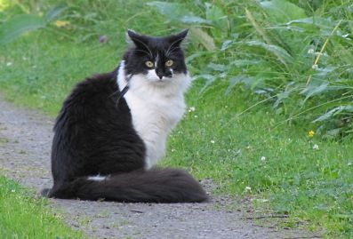
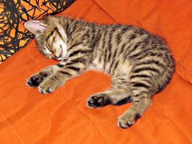
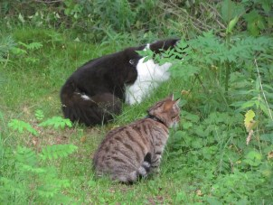
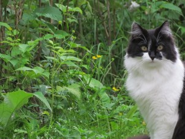
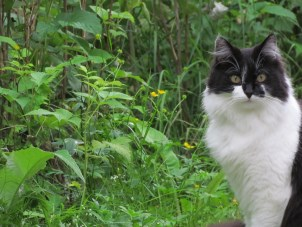

SAKKE JA SAANAPSYKAN VIDEOABIKURSSIT: PSYKOLOGIAN MAAILMA -VIDEOKERTAUSKURSSI ABEILLE (vlogi) - uudet OPSit PS7 ABI KERTAUSKURSSI (opetustilanne) - VANHA OPS (OPS 2016 ja 2021): PS1 Toimiva ja oppiva ihminen PS2 Kehittyvä ihminen PS3 Tietoa käsittelevä ihminen PS4 Tunteet ja mielenterveys PS5 Yksilöllinen ja yhteisöllinen ihminen Sakke - persoona ennen muuta Saana - olen suomalainen Sakke ja Saana - yhdessä enemmän  |
SAKKE JA SAANA
Minä olen ollut kissahullu aina. Ei minulla mitään koiriakaan vastaan ole. Siskoni Novaskotiannoutaja Tessu ottaa minut vastaan niin liehakoiden, että aina täytyy toppuutella, vaikka juuri minä olen se, joka Tessua pienenä "koulutin". Ja lapsena perheessämme oli kolme ajokoiraa, koska isäni ja veljeni metsästivät.Heinäkuu 2007 muutti elämää todella paljon. Silloin haimme Ilmajoelta poikakissan, joka oli vasta aivan liian pieni luovutettavaksi, mutta viimeinen talosta, joka luovutettiin. SAKKE oli repukka, jota kukaan ei ollut huolinut, mutta meille Sakke tuli hyvin kalliiksi ja rakkaaksi. Kalliiksi sanan varsinaisessa merkityksessäkin: Sakke laittoi verhot ja tavarat uusiksi. Kun Sakke täytti 5 vuotta ja syksy lähestyi, ajattelin, että voisimme ottaa toisenkin kissan. Sairauslomalaisena minulla ei ollut varaa suureen viiskytvuotislahjaan silloiselle vaimolleni. Niinpä yllätin hänet täysin, tuomalla meille pikkuruisen tyttökissan, joka sai nimekseen SAANA. Veljeni ja hänen vaimonsa tulivat katsomaan Saanaa ja heillä oli nimiehdotuksia matkassa. Me olimme sitä ennen päätyneet Saanaan. Veljeni sanoi, että eikö hyvä nimi olisi Saana tai Saaga. Totta vie on hyvä nimi. Ja Saanan juuret ovat syvällä suomalaisessa maaseudussa Saarijärvellä. Nykyisin asun täällä äänekoskella kerrostalossa Saken ja Saanan kanssa, jotka piristävät päivääni ja tulevat aina iloisena vastaan, kun tulen töistä tai kaupasta kotiin. Sakesta ja Saanasta näet ja opit enemmän vasemman palstan linkeistä!     |
PÄIVITYS 1.1.2023 - VUOSIPÄIVITYS
© Jyrki Rossi, 1999-2023 ---MAIL: etunimi.sukunimi@aanekoski.fi
© Jyrki Rossi, 1999-2023 ---MAIL: etunimi.sukunimi@aanekoski.fi